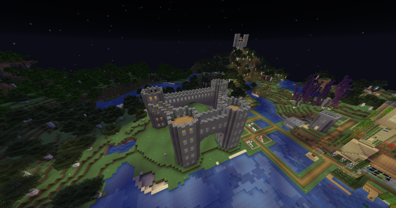
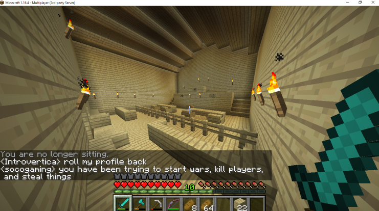
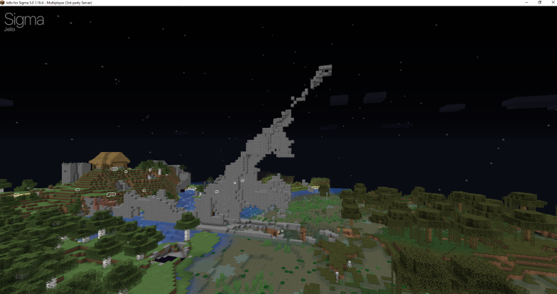
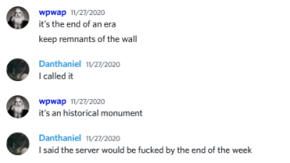
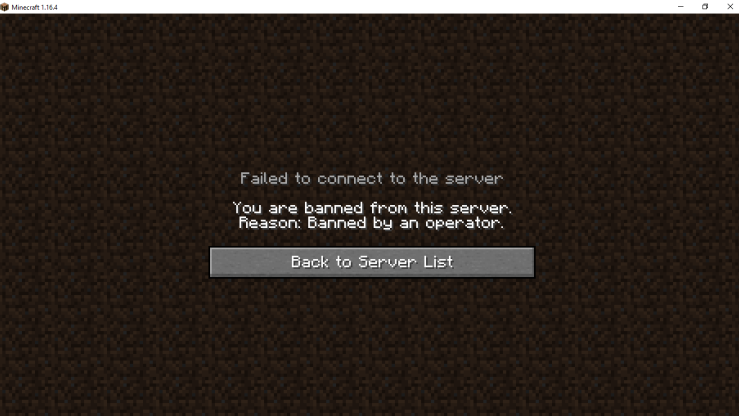

Wpwap Minecraft Resources
The 27th was arguably one of the more active days of the server, but it was sadly also the last. The DMZ was destroyed, and low morale along with a ban wave left many with no Minecraft server to play on.
The finished castle, from above.
The finished courthouse interior, along with a very tense conversation in chat.
The remains of the DMZ after it had been destroyed.
Wpwapians mourning the loss of the DMZ, and subsequent disbandment of the base of operations.
A screenshot from Jackie's point of view, forshadowing many more bans to come in the following weeks.
